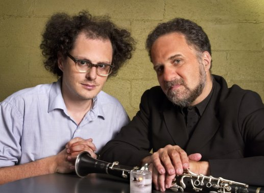

about me
 Software:
Software:
Torta
Karmack
Plata
FUmanchu!
Rants:
AboutMe
Blogging
El origen del hombre americano
Propositos2006
Propositos2007
SWFing
Pictures:
Sicilia -
thumbs
Visita Dimo 2007 -
thumbs
Tokyo -
thumbs
Barcelona -
thumbs
Lisbon -
thumbs
Gilberto Gil -
thumbs
Visita Fidel -
thumbs
Hiver -
thumbs
Dogs -
thumbs
Italy -
thumbs
Eurockeennes -
thumbs
Grenoble -
thumbs
Chipie -
thumbs
Place aux Herbes -
thumbs
Eek Friends:
 Alejo Alejo
Javier
Nelson
Old Posts:
Archive
Created with:
emacs
bash
libXSLT


 Dimo's Art
Quebec Hispano
Dimo's Art
Quebec Hispano
|
|
2006 - August |
Varias cosas:
- Me caso.
- No he visto la tele-novela "sin tetas no hay paraiso", y apenas he ojeado el libro. Sin embargo, estoy de acuerdo con colombianito cuando critica a Canal Caracol por ufanarse de su supuesta denuncia de la superficialidad y el machismo, cuando las presentadoras de sus noticieros son escogidas mas por sus atributos fisicos que por cualquier otra cosa.
-
Javier tambien mencionaba el otro dia que en el famoso video de Colombia is passion (pagado con plata publica, supongo), uno de los ganchos para convencer a la gente de venir a Colombia son las "countless beautiful women", representadas en el video por unas modelos estilo revista soho. Nadie se puede sorprender de que unas jovencitas quieran hacerse cirugias plasticas, cuando incluso el discurso oficial promueve la idea de la mujer como un objeto.
- "One of the democratic principles of lisp is 'let others do what you allow yourself to do'" -- Christian Queinnec in Lisp In Small Pieces.
-
Lie by Lie: Las mentiras usadas por la administracion Bush para iniciar la guerra en Iraq, en orden.
|
|
Ultimamente me he acordado de la gente que prestó servicio militar conmigo, en la Policía Militar 15. Nosotros eramos un contingente "media fase" (mes y medio de instrucción solamente) de rolos, entre dos contingentes de "panguanos" (gente que venía del Valle y de Nariño) y que en palabras de un capitán eran "sacados de las peores comunas de Popayán".
Ya se me olvidó el nombre de muchos. Estaba Talero, un tipo bajito ahí. Pinto, el cual me encontré luego por fuera, cuando salía de un concierto de 1280 almas con Fidel y Biviany en la media torta, y que me grito "hey, morrapo HP" muerto de la risa, al venir a saludarme. Estaba también "el boyaco", que terminó arrestado por la policía junto con otros por un problema feisimo.
Serge Gainsbourg
Estaba Gamba, que se portaba como un niño de doce años. Meza, que iba a abrir un bar en La Castellana. Estrada, el gordo. Había otro de quien no logró acordarme el nombre, a pesar de que era más amigo mío que los demás que he mencionado y que quería entrar al DAS. Había otro "boyaco" con la mirada torcida, que a veces chupaba boxer antes de acostarse.
Me acuerdo que un par de años más tarde me encontré con uno de los poquisimos que iba a entrar a la universidad, de todo un batallón de varios cientos. Creo que era el único que había entrado como yo a la universidad de los andes. Nos pusimos a hablar del ejercito, etc. Me contó que unos meses luego de "la mocha" (el fin del servicio militar) uno de los compañeros había ido a la casa a pedirle plata prestada y que ese era el último y el único contacto que habia tenido con los demás.
|
|
|
Hace unos meses fuí a comprar un sobre, que vale algo asi como 20 centavos de euro, en una cigarrería. Como solo tenía un billete de 20 euros, decidí comprar alguna otra cosa para no contrariar al comerciante. Finalmente me llamo la atención un "dédé", que es uno de esos juegos de azar en los que se raspa con una moneda un cartón para descubrir si hay premio o no (tipo los desaparecidos "raspa-raspa" colombianos). Resultado: me gané un jugoso premio de 16 euros. Bueno, en fin. El cuento es que ayer repetí la operación, y esta vez gané 4 euros (en realidad, solo 2 euros, ya que el cartón vale 2 euros).
Emocionado con mi suerte (dos juegos jugados, dos juegos ganados), decidí invertir las ganancias en otro dédé. No gané nada. Pero el fondo del asunto es que solo compré un dédé, asi que al final no perdí ni gané nada.
Esa es la técnica de los que sabemos jugar :P.
|
|
|
Este me parece uno de los mejores blogs de opinión sobre Colombia, y de los menos conocidos (a juzgar por el número de comentarios). Lo recomiendo.
|
|
|
Bromeando con Alejo hace algunas semanas sobre los posibles nombres para nuestro equipo en el ICFP contest, decidimos finalmente llamarlo FUN. FUN no solo evoca FUNctional Programming sino que también contiene las iniciales de los Freaks Unidos y además señala nuestro objetivo al participar en el concurso (divertirnos).
Le dije entonces a Alejo, en broma, que habría que fundar el paradigma de Fun Oriented Programming (una referencia burlesca al Object Oriented Programming), cuya máxima fundamental fuese que si uno se está divirtiendo al programar, forzosamente lo está haciendo bien.
A pesar de haberlo dicho en chiste, creo que esa frase no está lejos de mis sentimientos sobre la programación. Para mi, los programas buenos, capaces de durar mucho tiempo en vida, son aquellos que por ser fáciles de entender son faciles de adaptar y de mejorar. Un programa es la manera que tiene alguién de explicarnos algo. Y como toda explicación, entre más corta se pueda hacer sin hacerla incompleta, más facil será de entender. La repetición, siendo enemiga de la brevedad, está ausente de los programas que son faciles de entender y de modificar.
Qué tiene que ver eso con la FUN Oriented Programming? :P Bueno.. lo contrario de la diversion es el aburrimiento. El aburrimiento viene de hacer la misma cosa una y otra vez, de las tareas mecánicas, de todo lo que ya se conoce bien. De la repeticion, en suma. La diversion, por su parte, la provee el descubrimiento, la exploración, lo que es nuevo.
Minimizar la repetición no es facil. Es precisamente el problema fundamental: encontrar los conceptos que hacen que se pueda decir mucho con pocas palabras. Pero si vemos la buena programación como ligada a la eliminación de la repetición, la diversión y el aburrimiento pueden ser buenas heuristicas para saber que tan bien estamos programando.
Un pensamiento final: creo que en el futuro, la "ciencia" que estudie la actividad de escribir programas será mucho mas multi-disciplinaria y acogerá no solo a la ingeniería y las matemáticas como ahora, sino también la psicologia, la sociologia, las artes, y cualquier otra rama del conocimiento que ayude a explorar de manera más sofisticada la relación entre el espiritu humano y la manera de escribir software.
|
|

Clarinetista David Krakauer (a la derecha) y el DJ canadiense Josh Goldin (so called "Socalled")
Vi, por accidente, en concierto a los dos tipos de la foto y me gusto mucho lo que tocaron. Según lo que explico Krakauer en el escenario, se trata de música inspirada de la tradición judía de europa del este. El concierto que dieron era sobre todo música del ultimo disco: Bubbemeises: Lies My Gramma Told Me. Lo recomiendo.
|
|
|

 Save this post]
Save this post]